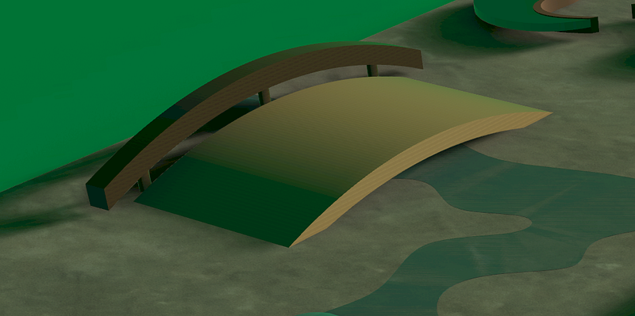
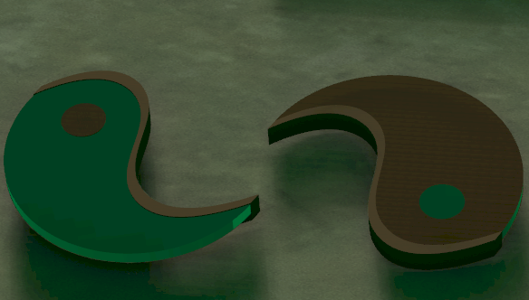

Minneapolis Skatepark Concept
A Rhino CAD skatepark concept exploring how nature-inspired forms, Japanese architectural references, material contrast, and movement-based interaction can shape a more immersive public skate environment.

Concept
I designed the park as an interactive landscape rather than a collection of separate ramps, combining concrete, metal, wood, faux water, natural color references, and X Games-inspired movement.
Scale
I started with skateboard dimensions and built the park around movement constraints: board clearance, ramp height, rail placement, landing zones, and feature spacing.
Features
The strongest elements are the bridge ramp over a faux river, the walnut rail, and yin-yang forms that work as architectural markers and moveable skate structures.

